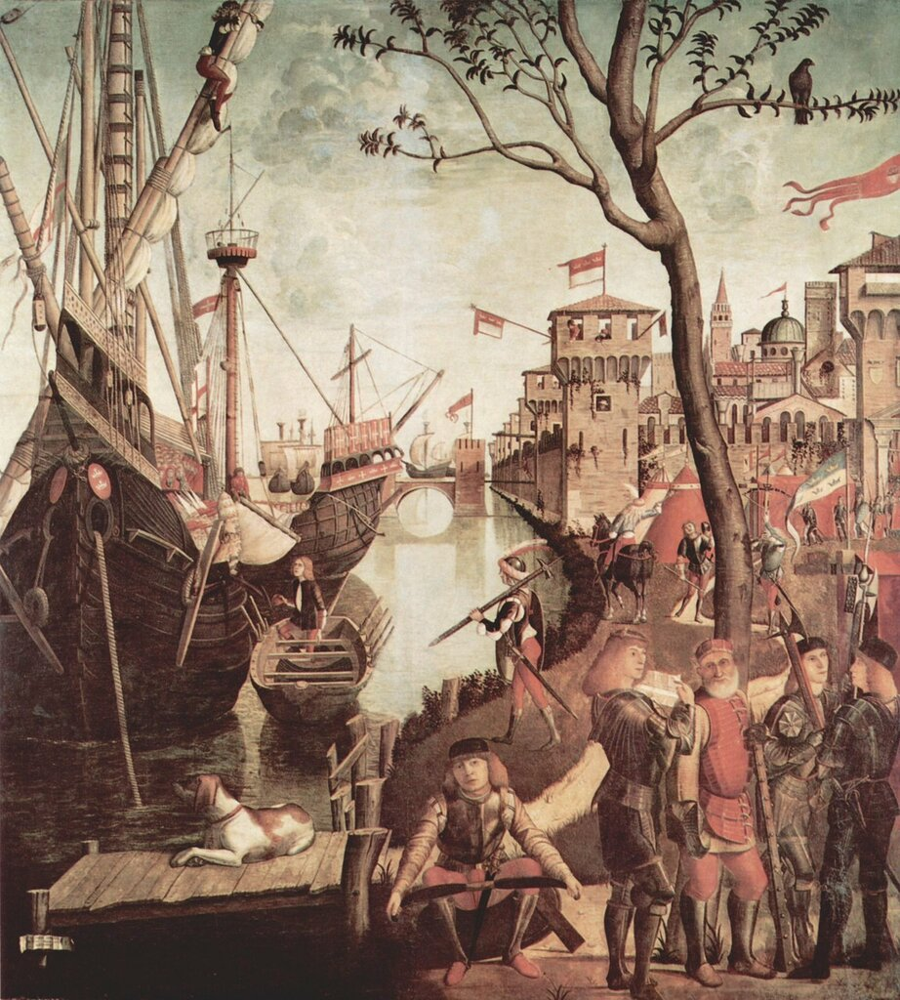
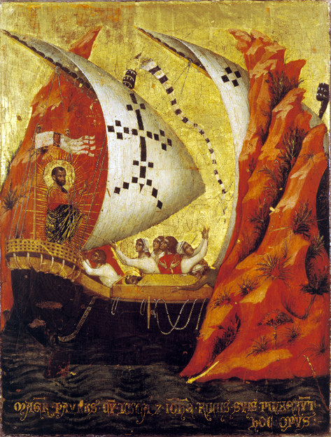
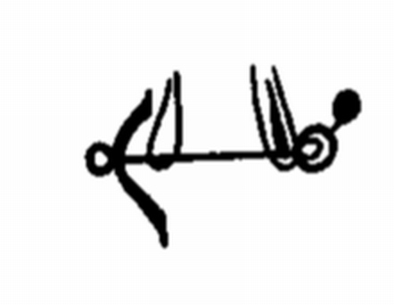

Якоря венецианского кога
За ним шаталось, якорь с цепью
Ища в дыре,
Соленое великолепье
Бортов и рей.
Б. Пастернак. Матрос в Москве

Vittore Carpaccio (1466–1525) Прибытие паломников в Кельн. (1490)
Gallerie dell'Accademia, Venice, Italy
Выглядит странным, что мы начали описание якорного устройства венецианской коки из трактата Fabrica di Galere, который историки относят к 1410 году, с рассказа о якорных канатах, а не о самих якорях. Для такого поступка у нас были основания. В трактате вес якорей, которыми оснащается корабль, относится к весу предназначенных для них канатов. Т.е., пишут не так: «для якоря весом в одну тонну нужен такой-то канат», а «для каната весом в одну тонну нужен такой-то якорь». Странно? Но такое вот извращенное соотношение присутствует, например, на листах 42v, 48v, и в других местах манускрипта. Правда, строгой пропорции для этого соотношения в трактате не найти. В одном месте (лист 42v) мы читаем, что якорь должен весить на 10 процентов больше, чем его канат. Но в приведенном далее примере (для каната весом 800 фунтов требуется якорь весом 850 фунтов) это соотношение соблюдается совсем не строго. В другом месте (лист 48v) требуется, чтобы якорь был на четверть тяжелее своего каната, но и это соотношение нигде не подтверждается конкретными цифрами.
Если суммировать все данные, приведенные в трактате о якорях, то мы насчитаем на венецианской коке десять якорей, причем два из них весом по тысяче фунтов (477 кг) а остальные восемь – по 850 фунтов (ок. 405 кг). Создается впечатление, что количество и вес якорей, даже в венецианском Арсенале, где все характеристики судна строго регламентировались, отдавалось на усмотрение кораблестроителя.
О форме якоря и способе его подвески мы можем только догадываться. Или судить по тем немногим изображениям, которые дошли до наших дней, как это, например, из базилики св. Марка в Венеции

Паоло Венециано. Сцена из жития св. Марка (1345)
Якорь подвешен горизонтально, если присмотреться, то можно также увидеть, что его лапы имеют форму полумесяца, которая являлась наиболее распространенной формой того времени.

Якорь штоковый, шток скорее всего деревянный.
Наибольшее количество якорей и их вес, которое упоминается в Fabrica di Galere, относится к кораблям грузовместимостью от 900 до 1500 ботт. На них размещали по 8-10 якорей весом от 1500 до 3000 фунтов (715-1430 кг) каждый.
Для подъема таких тяжелых якорей на судах должны были существовать соответствующие подъемные устройства. Мы находим упоминание об одном из них, которое называется sguindazo или guindazo. Написано, что это устройство имеет длину 8 футов (2,78 м) и диаметр 1,1 м. Был ли это шпиль? Трудно сказать. Устройство слишком большое в длину, чтобы им управляли с верхней палубы, и недостаточно длинное, чтобы проходить от верхней палубы до нижней и управляться с обеих. Скорее всего здесь речь идет об обычном горизонтальном вороте, брашпиле. Тем более, что ранее в этом же трактате при упоминании шпиля на фламандской галере используется термин argano, который встречается также и в других венецианских и итальянских бумагах по кораблестроению (об этом можно прочитать, в частности, в «Морском словаре» О.Жаля).
Продолжение последует.